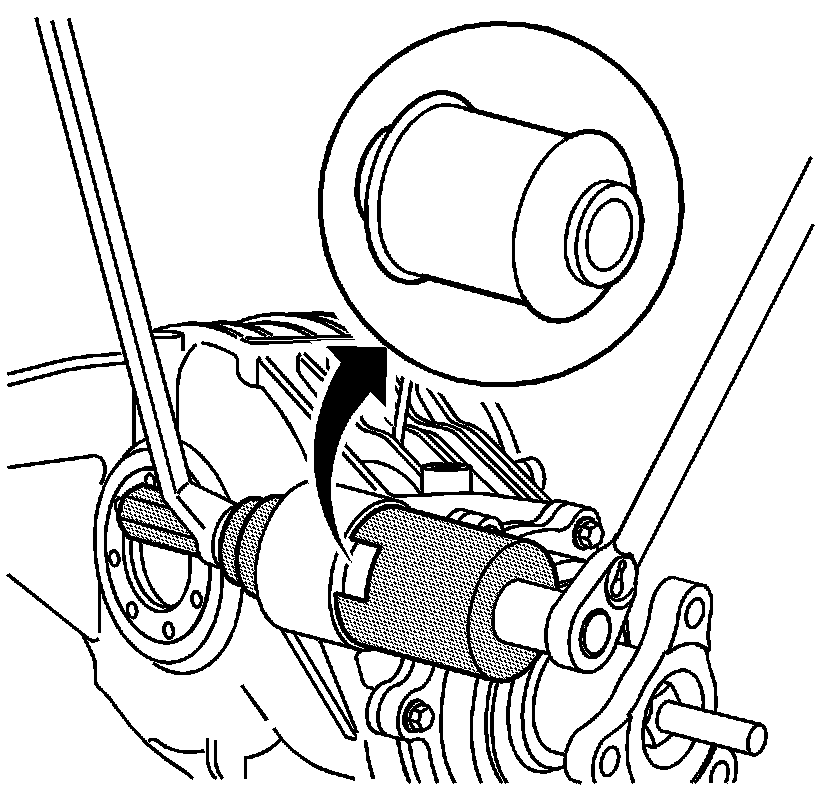

Differential Mount: Service and Repair
Differential Housing Support Bushing Replacement (Solid Rubber Bushing)
Tools Required
J 45007 Bushing Remover/Installer
Removal Procedure

1. Remove the differential assembly. Refer to Differential Replacement (Differential Replacement) .
2. Using the J 45007 , remove the housing support bushing.
Installation Procedure
1. Using the J 45007 , install the housing support bushing.
2. Install the differential assembly. Refer to Differential Replacement (Differential Replacement) .